Table of Contents
- Table of Contents
- 🌐 Netzwerk und Webprogrammierung
- 🖥️ Client–Server Model: Foundations of Modern Networking
- 📡 REST API
- 🌐 ASP.NET Core API
- 🔌 Sockets
- 🧵 Threads
🌐 Netzwerk und Webprogrammierung
🖥️ Client–Server Model: Foundations of Modern Networking
The Client–Server model underpins most network architectures today. Two primary roles exist:
-
Client
- Initiator of requests
- Frontend application (web browser, mobile app, desktop client)
- Sends requests and awaits responses
-
Server
- Listener for incoming connections
- Hosts services, data, and resources
- Can handle many clients concurrently
🔄 Request–Response Pattern
Client Server
| —— (1) Request ——> |
| |
| <—— (2) Response —— |
🌐 Common Protocols & Ports
| Protocol | Default Port | Use Case |
|---|---|---|
| HTTP / HTTPS | 80 / 443 | Web pages, REST APIs |
| FTP | 21 | File transfer |
| SMTP | 25 | Outgoing email |
| DNS | 53 | Domain name resolution |
| SSH | 22 | Secure shell access |
| MQTT | 1883 / 8883 | IoT publish/subscribe messaging |
🏗️ Architecture Variants
-
Single-Threaded Server
- Processes one request at a time.
- Simple, minimal resource use—but poor under heavy load.
-
Multi-Threaded / Multi-Process
- Spawns threads or processes per client.
- Improves parallelism; higher memory and context-switch cost.
-
Event-Driven / Asynchronous
- Uses a single thread with non-blocking I/O (e.g., Node.js, Nginx).
- Scales efficiently to thousands of small requests.
-
Load Balancing & Clustering
- Distributes traffic across multiple server instances.
- Provides high availability and horizontal scalability.
✅ Advantages & ❌ Disadvantages
| Advantages | Disadvantages |
|---|---|
| Clear separation of concerns | Single point of failure (if unclustered) |
| Centralized updates & maintenance | Network latency can affect performance |
| Vertical & horizontal scaling possible | Complexity in clustering and data synchronization |
| Strong security controls (firewalls, ACLs) | Potential bottlenecks (DB, bandwidth) |
🔐 Security & Authentication
- TLS/SSL (e.g., TLS 1.2, TLS 1.3)
Encrypts data in transit to prevent eavesdropping and tampering. - OAuth 2.0 / JWT
- OAuth 2.0 for delegated authorization.
- JSON Web Tokens carry signed payloads; stateless and scalable.
- API Keys / Basic Auth
Simple but less secure—best for “trusted” internal clients. - CORS (Cross-Origin Resource Sharing)
Browser-enforced rules determining which domains may access APIs.
⚙️ Real-World Examples
- Web Browser ↔ Web Server
Apache, Nginx serving HTML/CSS/JS over HTTPS. - Mobile App ↔ REST Backend
JSON payloads via HTTPS; often paired with OAuth 2.0. - IoT Sensor ↔ MQTT Broker
Publish/Subscribe replace direct request–response for telemetry. - Database Client ↔ DB Server
JDBC/ODBC connections to SQL or NoSQL databases.
🚀 Scaling & Performance Optimization
- Vertical Scaling
Increase CPU, RAM, or I/O capacity on a single server. - Horizontal Scaling
Add more server instances behind a load balancer. - Caching Layers
Use Redis or Memcached to store frequent query results. - Content Delivery Network (CDN)
Distribute static assets geographically closer to clients.
🔮 Future Trends: Microservices & Serverless
- Microservices
Many small, domain-specific services communicate via lightweight protocols (e.g., gRPC, REST). - Serverless (FaaS)
Developers deploy functions; cloud provider auto-scales and bills per execution.
📡 REST API
Roy Fielding identified five architectural constraints in his 2000 dissertation, collectively known as Representational State Transfer (REST):
-
Addressable Resources
- Every resource is uniquely addressable via a URI (e.g.,
/employees,/orders/123).
- Every resource is uniquely addressable via a URI (e.g.,
-
Uniform, Constrained Interface
- A limited, standardized set of operations (HTTP methods) for manipulating resources:
- GET
- Retrieve a resource
- Safe and idempotent (does not change state)
- PUT
- Create or update a resource at the given URI
- Idempotent (multiple identical requests yield the same state)
- POST
- Create a new subordinate resource under the target URI
- Not idempotent (each request creates a new resource).
- DELETE
- Remove a resource.
- HEAD
- Same as GET, but only returns headers and status codes.
- OPTIONS
- Returns the HTTP methods supported by a resource.
- GET
- A limited, standardized set of operations (HTTP methods) for manipulating resources:
-
Representation-Oriented
- Clients and servers exchange representations of resources (not the raw objects themselves).
- Common formats include JSON, XML, and YAML.
- The
Content-Typeheader indicates the format of the response; theAcceptheader lets clients request a preferred format.
-
Stateless Communication
- Each request from client to server must contain all the information needed to understand and process the request.
- No client session state is stored on the server between requests, which improves scalability and simplifies recovery.
-
Hypermedia As The Engine Of Application State (HATEOAS)
- Resource representations include hyperlinks to related resources and allowable operations, guiding clients through application workflows.
⚙️ Designing a RESTful Web Service
-
Define Your Domain Model
- Identify the key entities (e.g., Employees, LogbookEntries, Orders).
-
Model Your URIs
- Collection endpoints:
/employees→ all employees/logbookentries→ all logbook entries
- Item endpoints:
/employees/{id}→ a single employee/logbookentries/{id}→ a single logbook entry
- Nested relationships:
/employees/{id}/logbookentries→ all logbook entries for a specific employee
- Collection endpoints:
🔄 SOAP vs. RESTful Web Services
Advantages of RESTful Services
- Simpler to implement—no heavy WSDL or SOAP stacks.
- Clients need only a basic HTTP library.
- Multiple representations supported (JSON, XML, etc.).
- Responses can be cached (via HTTP caching mechanisms).
Disadvantages of RESTful Services
- No standardized data representation, leading to custom parsing/generation.
- Lacks built-in WS-* standards (WS-Security, WS-Transactions).
- Complex payloads may require extra handling on client and server sides.
Choosing between SOAP and REST depends on the use case:
- Use SOAP when you need formal contracts, built-in WS-* support, and strict enterprise features.
- Use REST when you prioritize simplicity, scalability, and lightweight clients.
🌐 ASP.NET Core API
📡 RestAPI
Terms
- Controller
- handles multiple requests/actions in a specific domain e.g.
WeatherForecastController
- handles multiple requests/actions in a specific domain e.g.
- Action
- is a single endpoint that can handle requests
- Typically a Controller includes multiple actions
🔧 Common Attribute Examples
[HttpPost]- Configures an action method to handle HTTP POST requests.
[Route("...")]- Defines the URL pattern for a controller or its action.
[Consumes("...")]- Specifies which content types an action can accept (e.g.,
application/xml,application/x-www-form-urlencoded).
- Specifies which content types an action can accept (e.g.,
🕹️ Controllers
- Controller classes must end with the
Controllersuffix (e.g.,WeatherController). - They inherit from
ControllerBase(orControllerfor MVC with views). - Contain action methods mapped to different HTTP endpoints.
- Typically organized around a specific domain or resource set.
💡 Controller Example
[ApiController]
[Route("[controller]")]
public class WeatherForecastController : ControllerBase
{
// GET /WeatherForecast
[HttpGet]
public IEnumerable<WeatherForecast> Get() { … }
// POST /WeatherForecast
[HttpPost]
public IActionResult Create([FromBody] WeatherForecast forecast) { … }
}
-
[ApiController]enables API-specific behaviors: -
Attribute routing is required (no UseMvc attribute routing).
-
Automatic
HTTP 400responses for model validation failures. -
Binding source inference for action parameters (e.g.,
[FromBody],[FromForm],[FromHeader],[FromServices]). -
[Route("[controller]")]exposes the controller at/WeatherForecast(controller name minus “Controller”).
🔗 Dependency Injection in ASP.NET Core
ASP.NET Core relies on a built-in DI container to manage services and their lifetimes. During startup, you configure services using the builder.Services collection.
⚙️ Registering Framework Services
var builder = WebApplication.CreateBuilder(args);
// Adds controller support
builder.Services.AddControllers();
// Adds EF Core DbContext
builder.Services.AddDbContext<MyDbContext>(options => …);
🛠️ Registering Custom Dependencies
- Define an interface and concrete implementation:
public interface IMyDependency { /* … */ } public class MyDependency : IMyDependency { /* … */ } - Register in the DI container with the desired lifetime:
// Transient: a new instance every time it’s requested builder.Services.AddTransient<IMyDependency, MyDependency>(); // Scoped: one instance per HTTP request builder.Services.AddScoped<IMyDependency, MyDependency>(); // Singleton: one instance for the application’s lifetime builder.Services.AddSingleton<IMyDependency, MyDependency>();
🔄 Middleware Pipeline
ASP.NET Core processes each incoming HTTP request through a chain of middleware components. Each middleware can either:
- Perform work before and/or after invoking the next component
- Short-circuit and terminate the pipeline
🚀 Adding Middleware
var app = builder.Build();
app.UseHttpsRedirection(); // Redirect HTTP → HTTPS
app.UseRouting(); // Route matching
app.UseAuthentication(); // Authenticate users
app.UseAuthorization(); // Enforce authorization policies
app.MapControllers(); // Map controller endpoints
app.Run();
Each Use… call inserts a middleware into the pipeline in the defined order.
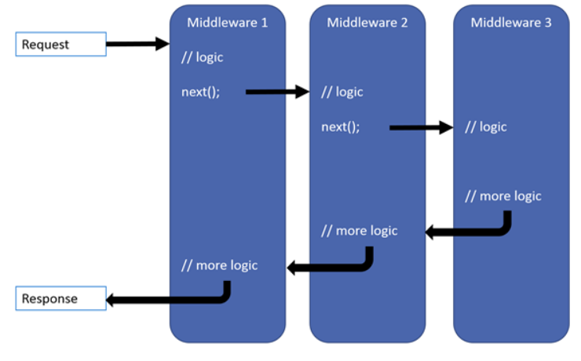
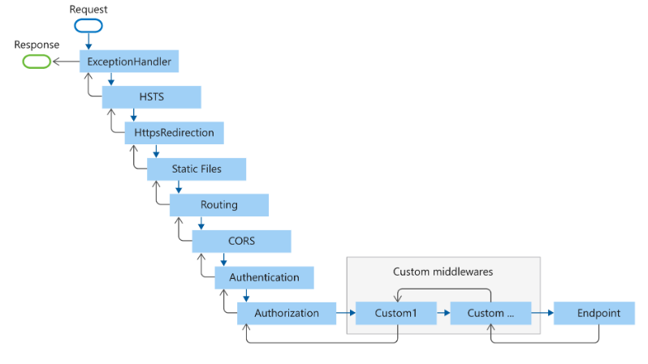
🏠 Host in ASP.NET Core
The Host encapsulates all core resources and services required to run an ASP.NET Core application:
- HTTP server implementation (Kestrel, IIS integration)
- Middleware pipeline
- Logging
- Dependency Injection services
- Configuration sources
Most commonly you use the WebApplication host.
🛠️ Host / WebApplication Example
using Microsoft.AspNetCore.Mvc;
var builder = WebApplication.CreateBuilder(args);
// Register services
builder.Services.AddControllers();
var app = builder.Build();
// Configure middleware
app.UseHttpsRedirection();
app.UseAuthorization();
// Map endpoints
app.MapControllers();
// Start the app
app.Run();
🚀 WebApplication Features
- Web server: Kestrel by default, with optional IIS integration
- Configuration sources (in precedence order):
appsettings.json- Environment variables
- Command-line arguments
📝 Logging in ASP.NET Core
ASP.NET Core includes a built-in logging API that works with multiple providers (Console, Debug, Azure, Windows, etc.). Configure during host build:
var builder = WebApplication.CreateBuilder(args);
builder.Logging.AddConsole();
This enables structured logging throughout your application via ILogger<T>.
⚙️ WebServer Configuration
ASP.NET Core
-
Kestrel Server
-
Default cross-platform HTTP server.
-
Configure endpoints in
appsettings.jsonor code:// appsettings.json { "Kestrel": { "Endpoints": { "Http": { "Url": "http://*:5000" }, "Https": { "Url": "https://*:5001", "Certificate": { "Path": "cert.pfx", "Password": "…" } } } } } -
Or in code:
builder.WebHost.ConfigureKestrel(options => { options.ListenAnyIP(5000); options.ListenAnyIP(5001, listenOptions => listenOptions.UseHttps("cert.pfx", "password")); });
-
-
IIS Integration
- Install the ASP.NET Core Hosting Bundle.
web.configauto-generated to forward to Kestrel.
-
Launch Settings
Properties/launchSettings.jsondefines profiles, application URLs, environment variables.
-
Reverse Proxy
-
Often fronted by Nginx or Apache.
-
Example Nginx block:
server { listen 80; server_name example.com; location / { proxy_pass http://localhost:5000; proxy_http_version 1.1; proxy_set_header Upgrade $http_upgrade; proxy_set_header Connection keep-alive; proxy_set_header Host $host; } }
-
XAMPP (Apache + PHP + MySQL)
- Apache Configuration (
httpd.conf)Listen 80(or custom port).DocumentRoot "C:/xampp/htdocs"and<Directory>settings for permissions.
- Virtual Hosts (
extra/httpd-vhosts.conf)- Define
<VirtualHost *:80>blocks for multiple sites.
- Define
- PHP (
php.ini)- Enable/disable extensions, adjust
memory_limit,upload_max_filesize.
- Enable/disable extensions, adjust
- MySQL (
my.ini)- Port, buffer sizes, character sets.
- Control Panel
- Start/stop Apache, MySQL, manage ports and services.
General Web Server Essentials
- Virtual Hosting
- Host multiple domains on one IP via name-based or IP-based vhosts.
- Firewalls & Ports
- Open only required ports (e.g., 80, 443).
- Use
ufw/firewalldor cloud security groups.
- SSL/TLS
- Obtain certificates from Let’s Encrypt or a CA.
- Automate renewal (Certbot, ACME clients).
- Performance Tuning
- Enable Keep-Alive, gzip/deflate compression.
- Use HTTP/2 where supported.
- Implement caching headers (Cache-Control, ETag).
- Security Best Practices
- Disable directory listing.
- Harden headers (HSTS, X-Frame-Options, Content-Security-Policy).
- Regularly update server software.
- Logging & Monitoring
- Access/error logs (rotate with
logrotate). - Use tools like Prometheus, Grafana, ELK stack for metrics and alerts.
- Access/error logs (rotate with
🧪 API Testing
🧰 Postman
- Environment Management
- Create named environments (e.g., Development, Staging, Production) with variable sets (
{{baseUrl}},{{authToken}}).
- Create named environments (e.g., Development, Staging, Production) with variable sets (
- Collections & Folders
- Group related requests into Collections and Folders for organization and sharing.
- Request Building
- Define method, URL, headers, query params, body (raw JSON, form-data, x-www-form-urlencoded).
- Use pre-request scripts (JavaScript) to set variables, generate tokens, or compute timestamps.
- Use test scripts to validate responses (status codes, JSON schema, value assertions).
- Automation & CI
- Export Collections/Environments as JSON and run via Newman CLI in pipelines.
- Generate detailed HTML/JSON reports.
🧭 Swagger / OpenAPI
- API Documentation
- Use Swashbuckle in ASP.NET Core:
builder.Services.AddSwaggerGen(c => { c.SwaggerDoc("v1", new() { Title = "My API", Version = "v1" }); }); - In
Program.cs:app.UseSwagger(); app.UseSwaggerUI(c => { c.SwaggerEndpoint("/swagger/v1/swagger.json", "My API v1"); c.RoutePrefix = ""; // serve UI at root });
- Use Swashbuckle in ASP.NET Core:
- Interactive Console
- Automatically generate UI at
/swaggeror/for exploring endpoints, schemas, and example payloads.
- Automatically generate UI at
- Contract-First / Code-First
- Code-First: Decorate controllers/models with attributes (
[ApiController], XML comments). - Contract-First: Import a pre-defined OpenAPI spec file.
- Code-First: Decorate controllers/models with attributes (
- Client Generation
- Generate strongly-typed client SDKs (C#, TypeScript, Java) via
NSwagorAutoRest.
- Generate strongly-typed client SDKs (C#, TypeScript, Java) via
- Versioning
- Support multiple API versions (
/swagger/v1/swagger.json,/swagger/v2/swagger.json).
- Support multiple API versions (
🔌 Sockets
Sockets provide low-level network communication over TCP/UDP.
🟢 Java Sockets
Java’s java.net package offers ServerSocket/Socket for TCP. A server listens on a port and accepts incoming connections; a client connects and exchanges streams.
TCP Server Example
import java.io.*;
import java.net.*;
public class TcpServer
{
public static void main(String[] args)
{
int port = 5000;
try
{
ServerSocket serverSocket = new ServerSocket(port);
System.out.println("Server listening on port " + port);
Socket clientSocket = serverSocket.accept();
BufferedReader in = new BufferedReader(
new InputStreamReader(clientSocket.getInputStream()));
PrintWriter out = new PrintWriter(
clientSocket.getOutputStream(), true);
String msg;
while ((msg = in.readLine()) != null)
{
System.out.println("Received: " + msg);
out.println("Echo: " + msg);
}
in.close();
out.close();
clientSocket.close();
serverSocket.close();
}
catch (IOException e)
{
e.printStackTrace();
}
}
}
- ServerSocket binds to
portand waits inaccept(). - BufferedReader/PrintWriter wrap the socket’s I/O streams for line-based communication.
- The loop reads each line, prints it, and echoes it back until the client disconnects.
TCP Client Example
import java.io.*;
import java.net.*;
public class TcpClient
{
public static void main(String[] args)
{
String host = "localhost";
int port = 5000;
try
{
Socket socket = new Socket(host, port);
BufferedReader in = new BufferedReader(
new InputStreamReader(socket.getInputStream()));
PrintWriter out = new PrintWriter(
socket.getOutputStream(), true);
out.println("Hello from client!");
System.out.println("Server replied: " + in.readLine());
in.close();
out.close();
socket.close();
}
catch (IOException e)
{
e.printStackTrace();
}
}
}
- Socket connects to server’s
hostandport. - Sends a line with
println(), then reads the server’s response.
🔵 C# Sockets
C#’s System.Net.Sockets namespace provides both low-level Socket and higher-level TcpListener/TcpClient classes. Below using TcpListener and TcpClient.
TCP Server Example (TcpListener)
using System;
using System.Net;
using System.Net.Sockets;
using System.Text;
class TcpServer
{
static void Main()
{
int port = 5000;
TcpListener listener = new TcpListener(IPAddress.Any, port);
listener.Start();
Console.WriteLine($"Server listening on port {port}");
TcpClient client = listener.AcceptTcpClient();
NetworkStream stream = client.GetStream();
byte[] buffer = new byte[1024];
int bytesRead = stream.Read(buffer, 0, buffer.Length);
string msg = Encoding.UTF8.GetString(buffer, 0, bytesRead);
Console.WriteLine("Received: " + msg);
byte[] response = Encoding.UTF8.GetBytes("Echo: " + msg);
stream.Write(response, 0, response.Length);
stream.Close();
client.Close();
listener.Stop();
}
}
- TcpListener listens on the specified port and accepts one client.
- NetworkStream reads raw bytes into a buffer, then writes the echo response.
TCP Client Example (TcpClient)
using System;
using System.Net.Sockets;
using System.Text;
class TcpClientDemo
{
static void Main()
{
string host = "localhost";
int port = 5000;
TcpClient client = new TcpClient(host, port);
NetworkStream stream = client.GetStream();
byte[] data = Encoding.UTF8.GetBytes("Hello from client!");
stream.Write(data, 0, data.Length);
byte[] buffer = new byte[1024];
int bytesRead = stream.Read(buffer, 0, buffer.Length);
Console.WriteLine("Server replied: " + Encoding.UTF8.GetString(buffer, 0, bytesRead));
stream.Close();
client.Close();
}
}
- TcpClient connects to the server; NetworkStream handles sending and receiving raw byte arrays.
- Always close streams and clients to free resources.
Low-Level: Socket
For finer control, use the Socket class directly.
Raw Socket Server Example
using System;
using System.Net;
using System.Net.Sockets;
using System.Text;
class SocketServer
{
static void Main()
{
IPAddress ip = IPAddress.Any;
int port = 5000;
Socket listener = new Socket(
AddressFamily.InterNetwork,
SocketType.Stream,
ProtocolType.Tcp
);
listener.Bind(new IPEndPoint(ip, port));
listener.Listen(5);
Console.WriteLine($"Socket server listening on port {port}");
Socket client = listener.Accept();
byte[] buffer = new byte[1024];
int received = client.Receive(buffer);
string msg = Encoding.UTF8.GetString(buffer, 0, received);
Console.WriteLine("Received: " + msg);
byte[] response = Encoding.UTF8.GetBytes("Echo: " + msg);
client.Send(response);
client.Close();
listener.Close();
}
}
Raw Socket Client Example
using System;
using System.Net;
using System.Net.Sockets;
using System.Text;
class SocketClient
{
static void Main()
{
IPAddress ip = IPAddress.Loopback;
int port = 5000;
Socket client = new Socket(
AddressFamily.InterNetwork,
SocketType.Stream,
ProtocolType.Tcp
);
client.Connect(new IPEndPoint(ip, port));
byte[] data = Encoding.UTF8.GetBytes("Hello from raw socket client!");
client.Send(data);
byte[] buffer = new byte[1024];
int received = client.Receive(buffer);
Console.WriteLine("Server replied: " + Encoding.UTF8.GetString(buffer, 0, received));
client.Close();
}
}
- TcpListener/TcpClient simplify setup by wrapping
Socket. - Socket gives full control: you manually bind, listen, accept, connect, send, and receive raw byte arrays.
- Always close sockets/streams to free resources.
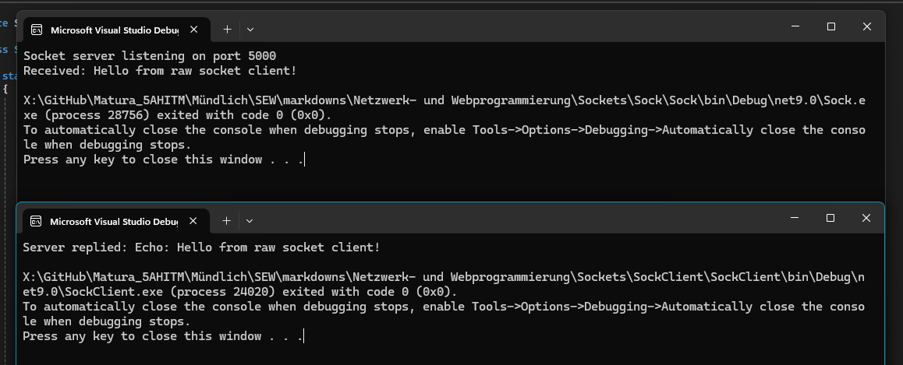
🧵 Threads
🧠 Threading in C#
In C#, you can use both low-level Thread or the higher-level Task/async model. In our BuchiBank example, we leverage async Task combined with locks for safe concurrency.
🔄 Synchronization
We use a private lock object to guard critical sections in BankAccount:
public class BankAccount
{
private readonly object _lock = new();
public async Task Deposit(double amount)
{
await Task.Run(() =>
{
lock (_lock)
{
Balance += amount;
TransactionHistory.Add(
new Transaction(DateTime.UtcNow, amount, TransactionType.Incoming));
}
});
}
public async Task<bool> Withdraw(double amount)
{
return await Task.Run(() =>
{
lock (_lock)
{
if (amount > Balance)
{
return false;
}
Balance -= amount;
TransactionHistory.Add(
new Transaction(DateTime.UtcNow, amount, TransactionType.Outgoing));
return true;
}
});
}
}
lock (_lock)ensures only one thread mutatesBalanceorTransactionHistoryat a time.- Without it, two workers could interleave and corrupt the account state.
⏳ Tasks
Workers inherit from an abstract Worker and run repeatedly via Task:
public abstract class Worker
{
public BankAccount Account { get; }
public int WaitTime { get; }
public Worker(BankAccount account, int waitTime)
{
Account = account;
WaitTime = waitTime;
}
public async Task RunForDurationAsync(int seconds)
{
var stopwatch = Stopwatch.StartNew();
while (stopwatch.Elapsed.TotalSeconds < seconds)
{
await Action();
await Task.Delay(WaitTime * 1000);
}
}
public abstract Task Action();
}
RunForDurationAsyncspins until the elapsed time exceeds the target.Action()is implemented byDepositerandWithdrawer, usingawait Account.Deposit(...)orawait Account.Withdraw(...).Task.WhenAll(...)inMainruns both workers concurrently and waits for them to finish.
☕ Threading in Java
In Java you can use Thread or ExecutorService. Here’s an analogous bank-account example with synchronized methods and Runnable workers.
BankAccount with synchronized
public class BankAccount
{
private double balance = 0.0;
public synchronized void deposit(double amount)
{
balance += amount;
System.out.println("Deposited " + amount + ", balance is now " + balance);
}
public synchronized boolean withdraw(double amount)
{
if (amount > balance)
{
System.out.println("Withdraw failed: " + amount + ", balance is " + balance);
return false;
}
balance -= amount;
System.out.println("Withdrew " + amount + ", balance is now " + balance);
return true;
}
public double getBalance()
{
return balance;
}
}
Worker Runnables
public class Depositer implements Runnable
{
private final BankAccount account;
private final int waitMillis;
public Depositer(BankAccount account, int waitMillis)
{
this.account = account;
this.waitMillis = waitMillis;
}
@Override
public void run()
{
long end = System.currentTimeMillis() + 10_000;
while (System.currentTimeMillis() < end)
{
double amount = Math.random() * 100;
account.deposit(amount);
try
{
Thread.sleep(waitMillis);
}
catch (InterruptedException e)
{
Thread.currentThread().interrupt();
}
}
}
}
public class Withdrawer implements Runnable
{
private final BankAccount account;
private final int waitMillis;
public Withdrawer(BankAccount account, int waitMillis)
{
this.account = account;
this.waitMillis = waitMillis;
}
@Override
public void run()
{
long end = System.currentTimeMillis() + 10_000;
while (System.currentTimeMillis() < end)
{
double amount = Math.random() * 100;
account.withdraw(amount);
try
{
Thread.sleep(waitMillis);
}
catch (InterruptedException e)
{
Thread.currentThread().interrupt();
}
}
}
}
Orchestrating in main
public class Main
{
public static void main(String[] args)
{
BankAccount account = new BankAccount();
Thread t1 = new Thread(new Depositer(account, 2000));
Thread t2 = new Thread(new Withdrawer(account, 1000));
t1.start();
t2.start();
try
{
t1.join();
t2.join();
}
catch (InterruptedException e)
{
Thread.currentThread().interrupt();
}
System.out.println("Final balance: " + account.getBalance());
}
}
synchronizedensures only one thread can enter the deposit/withdraw method at a time.Thread.sleep(...)simulates work delay.join()waits for both threads to complete before printing the final balance.
⚙️ Thread Lifecycle
- States: New, Runnable, Running, Blocked/Waiting, Terminated
🔀 Concurrency vs. Parallelism
- Concurrency: interleaving tasks on one or more cores
- Parallelism: truly simultaneous execution on multiple cores
🛡️ Thread Safety
- Race conditions, deadlocks, livelocks
- Immutability and reentrancy
🔒 Synchronization Primitives
- Locks (
lock/Monitor,synchronized) - Mutexes, Semaphores, ReaderWriterLock
volatile,Interlockedoperations
🏊 Thread Pools & Executors
- .NET
ThreadPool/TaskScheduler - Java
ExecutorService,ForkJoinPool
⏳ Asynchronous Programming
async/await(C#) vs.CompletableFuture/Future(Java)- Event-driven callbacks, reactive streams
📈 Parallel Libraries
- .NET Parallel LINQ (PLINQ),
Parallel.For - Java
Stream.parallel(),ForkJoinTask
💡 Best Practices
- Keep tasks small and stateless
- Prefer high-level abstractions (
Task/ExecutorService) - Always clean up threads/tasks
⚠️ Common Pitfalls
- Thread starvation, priority inversion
- Blocking in async code
- Over-threading vs. under-threading
🧰 Diagnostics & Profiling
- .NET
dotnet-trace, Visual Studio Concurrency Visualizer - Java Flight Recorder, Thread Dump analysis
🧵 Threads (Hofer)
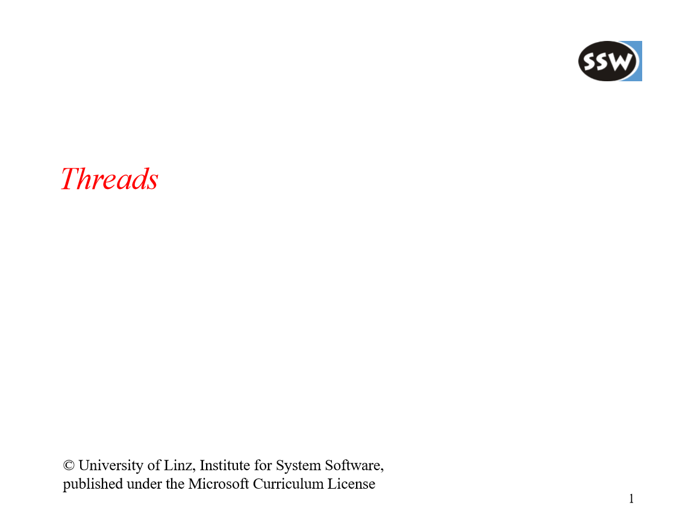
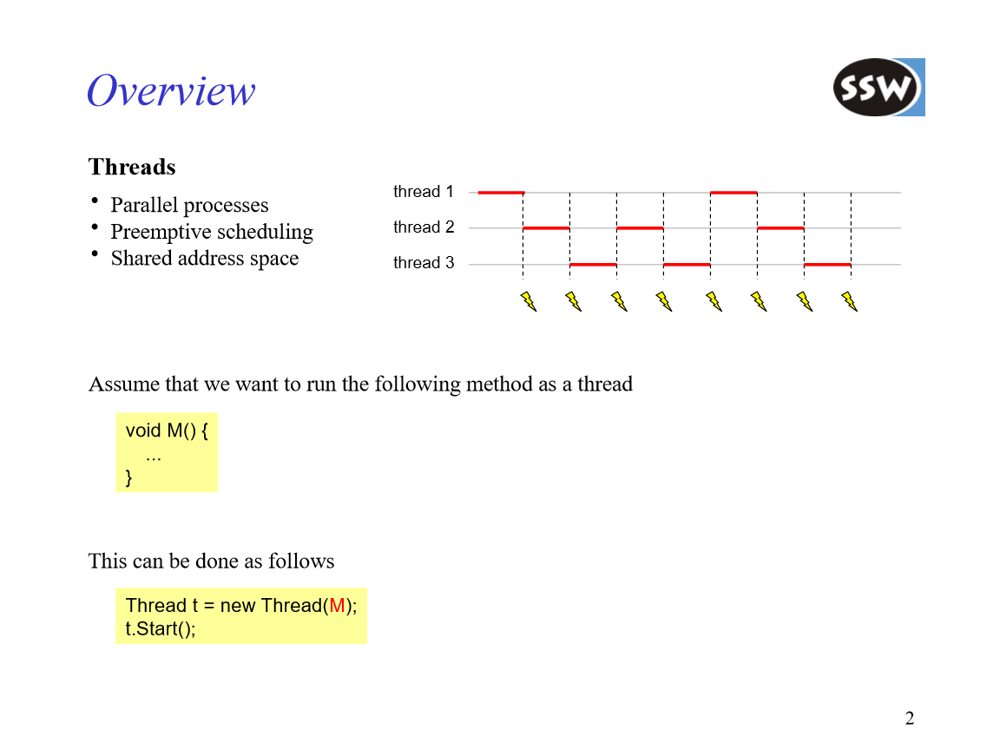


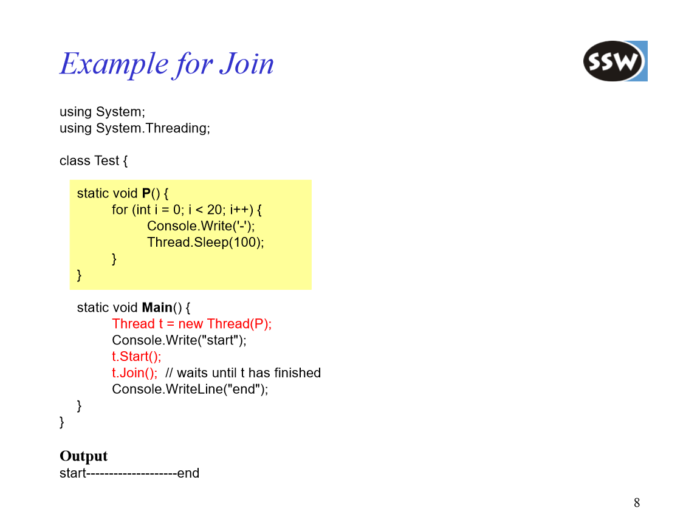
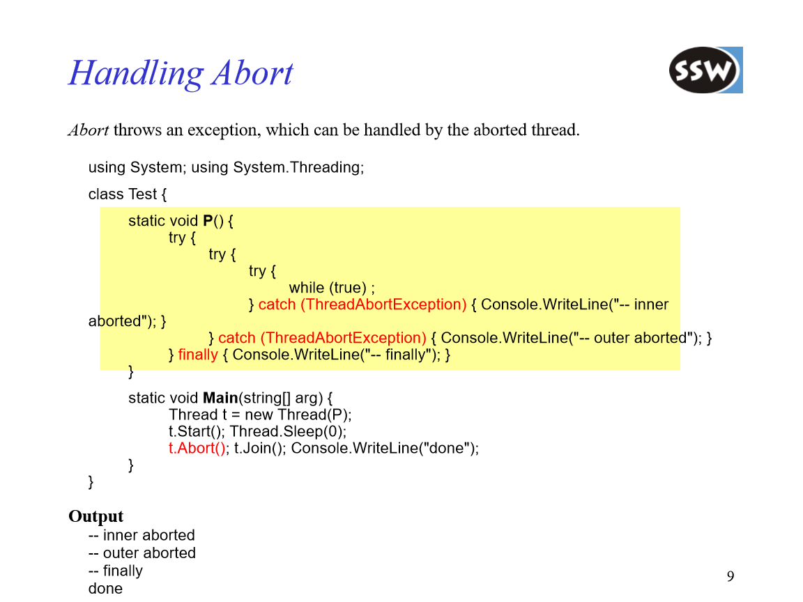

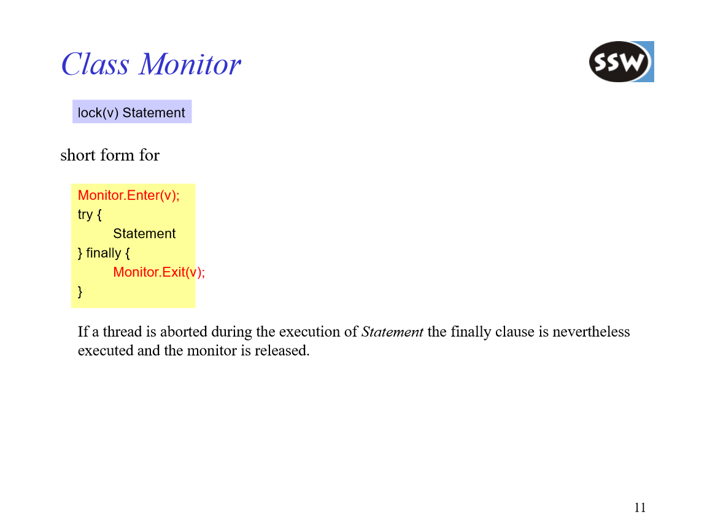
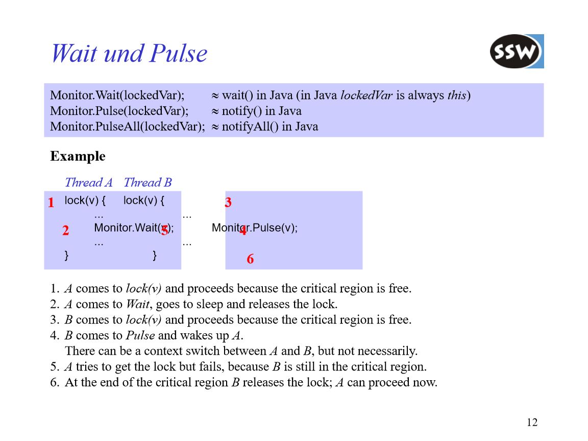

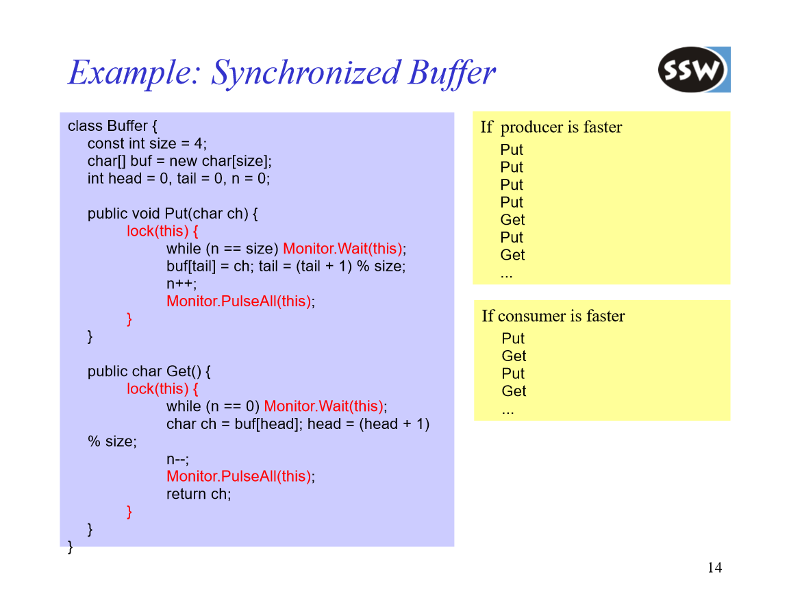
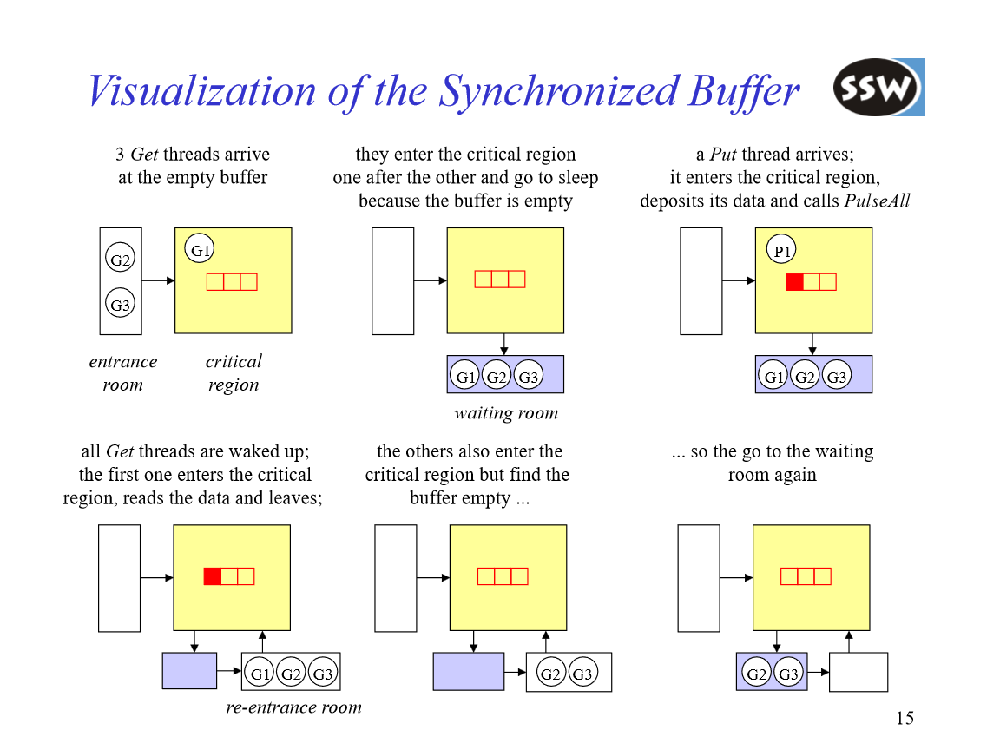